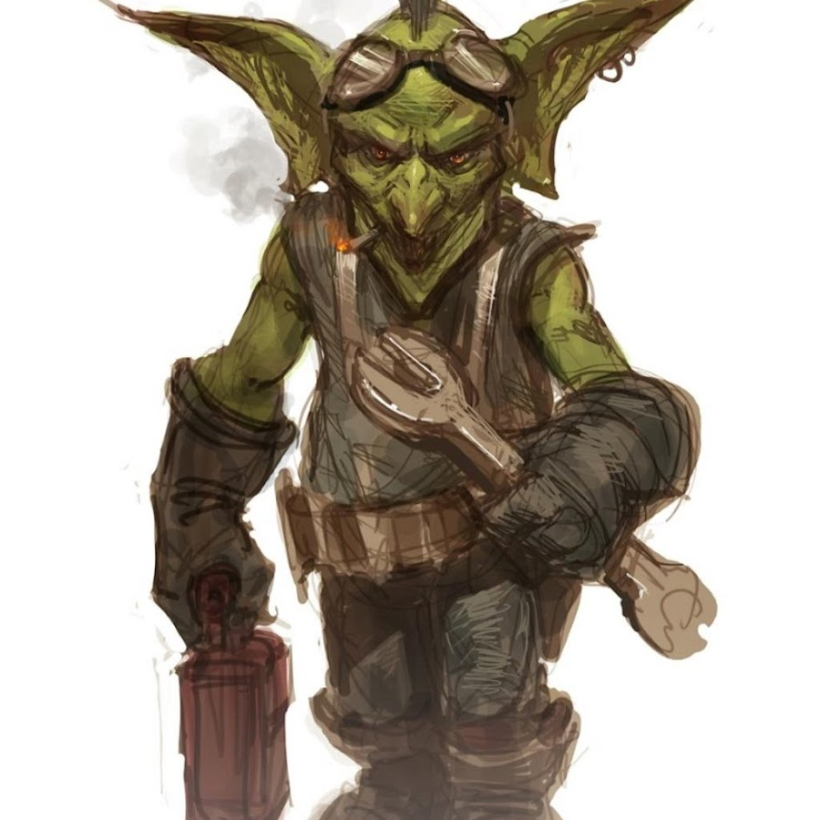

Playable Races > Goblin
Initially a slave race formed out of mutated, stunted Orcs that had broken out of confinement centuries ago and sought to become leaders in industry and commerce. They are shrewd, intelligent and shockingly sociable compared to their larger cousins.
They are fierce rivals of the Dwarves due to their opposed ideologies on invention and are reviled by woodland races for their total disregard for nature. Despite this, Goblins maintain staunch neutrality on all politics of Dunia, preferring to play middleman roles as arms dealers and oasis shop clerks.
Goblin stores are famous around the world for carrying everything one would want, and being able to commission the most exotic goods. Of course, they are equally infamous for being rigged with explosives and machinery that no other race finds disrespecting them worthwhile.
Nocturnal: Goblins have infravision, being able to see in dim light as if it was well lit.
Slinking: Goblins can hide in plain sight.
Racials: +2 AGI -1 WIS -1 CHA +4 Appraise
Health: 1d5 health points per level.
Origin: Goblins live in Southport, though they have shops near every race that carries valuables they're willing to part with.